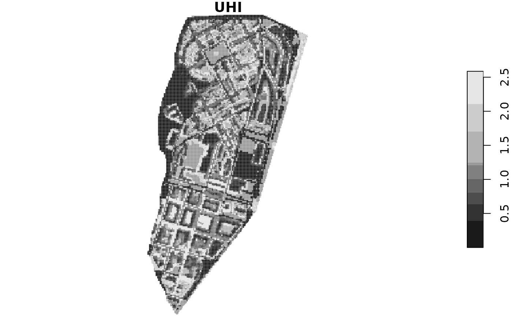

Set scenarios of urban agriculture
The function set_scenario provides a convenient way to
create randomized scenarios for urban agriculture. We use the
city_example provided with the package that is meant to
serve as example to create a model for a city of interest.
We create one scenario, with 50% of normal gardens, vacant plot,
streets and 75% of rooftops converted to edible_gardens. And with 50% of
created gardens being for commercial purposes. To see the correspondence
between original and urban agriculture elements, see
?set_scenario.
scenario <- set_scenario(city_example,
pGardens = 0.5,
pVacant = 0.5,
pRooftop = 0.75,
private_gardens_from = "Normal garden",
vacant_from = c("Vacant", "Streets"),
rooftop_from = "Rooftop",
pCommercial = 0.5)
#> Only 328 rooftops out of 453 assumed satisfy the 'min_area_rooftop'The warnings are triggered when there are not elements enough to fulfill the proportions provided to the function.
in this examples, we use the scenario created with
set_scenario, but all the indicators can be calculated
using an sf object with the same structure as
city_example.
Likewise, all the parameters used by the indicators are defined in
city_land_uses. However, all indicators provide an option
to override this an provide a customized dataframe with the parameters.
The structure of this dataframe is detailed in the documentation of each
function.
Estimate the benefits of urban agriculture
Urban Heat Island
The urban heat island indicator can return a summary of values or a
stars object. It needs a raster representing the Sky view
factor. See ?UHI for more details. We use the
SVF object provided with the package.
UHI(scenario, SVF)
#> Min. 1st Qu. Median Mean 3rd Qu. Max.
#> 0.000 0.547 1.012 1.032 1.420 2.587
Runoff prevention
The function runoff_prev returns an estimation of the
runoff in the city after a specific rain event (mm/day). It also
estimates the total rainfall and the rainwater harvested by urban
agriculture.
runoff_prev(scenario)
#> runoff rainfall rainharvest
#> 34.66903 108169.04500 1561.50493Distance to closest green area
The function green_distance computes the distances from
each home in the city to its closest public green area larger than a
specific area. The homes must be identified using the column passed to
residence_col. The default values for minimal area (0.5 ha)
and for maximum distance (300 meters) follow the recommendations of
WHO.
green_distance(scenario)
#> Min. 1st Qu. Median Mean 3rd Qu. Max.
#> 6.12 155.08 251.70 249.72 347.42 465.73If percent_out is set to TRUE, instead of a
summary of distances, it returns the percentage of homes that are
further than max_dist.
green_distance(scenario, percent_out = TRUE)
#> [1] 36.92615Green per capita
The function green_capita calculates the amount of
public and/or private green are per capita in the city. It can compute
the total of the city, the values for each neighbourhood or the ratio
between the neighbourhoods with minimum and maximum value (min /
max).
green_capita(scenario, inhabitants = 6000)
#> [1] 10.70483
green_capita(scenario,
neighbourhoods = neighbourhoods_example,
inh_col = 'inhabitants',
name_col = 'name',
verbose = TRUE)
#> # A tibble: 2 × 4
#> name area inhabitants green_capita
#> <chr> <dbl> <dbl> <dbl>
#> 1 Sant Narcís nord 35517 1028 34.5
#> 2 Sant Narcís sud 34420 5290 6.51
green_capita(scenario,
neighbourhoods = neighbourhoods_example,
inh_col = 'inhabitants',
name_col = 'name')
#> [1] 0.1883268Nitrogen dioxide (NO2) sequestered by urban green
The function no2_seq computes the amount of
NO2 sequestered by urban green in gr/s.
no2_seq(scenario)
#> gr/s
#> 109.4501Jobs created by commercial urban agriculture
The function edible_jobs estimates the number of jobs
potentially created by commercial urban agriculture. Since the number of
jobs / m2 is randomized, it computes a Monte Carlo simulation (n=1000)
to estimate the value and returns the confidence interval (unless
verbose = TRUE).
edible_jobs(scenario)
#> 5% 50% 95%
#> 192.3673 1569.2654 3231.9199Volunteers involved in community urban agriculture
The function edible_volunteers estimates the number of
volunteers potentially involved in community urban agriculture. Since
the number of volunteers / m2 is randomized, it computes a Monte Carlo
simulation (n=1000) to estimate the value and returns the confidence
interval (unless verbose = TRUE).
edible_volunteers(scenario)
#> 5% 50% 95%
#> 282.468 2386.520 4371.657Food production
The function food_production estimates the food produced
by urban agriculture (in kg/year). Since the productivity of each plot
is randomized, It computes a Monte Carlo simulation (n=1000) to estimate
the value and returns the confidence interval (unless
verbose = TRUE).
food_production(scenario)
#> 5% 50% 95%
#> 678774.1 905205.6 1139922.3Randomization
The construction of scenarios as well as some parameters in the indicators are randomized to consider uncertainty. Our recommendation is to run each scenario you want to simulate in a Monte Carlo simulation to get the confidence interval for each indicator. You will find a practical implementation here.